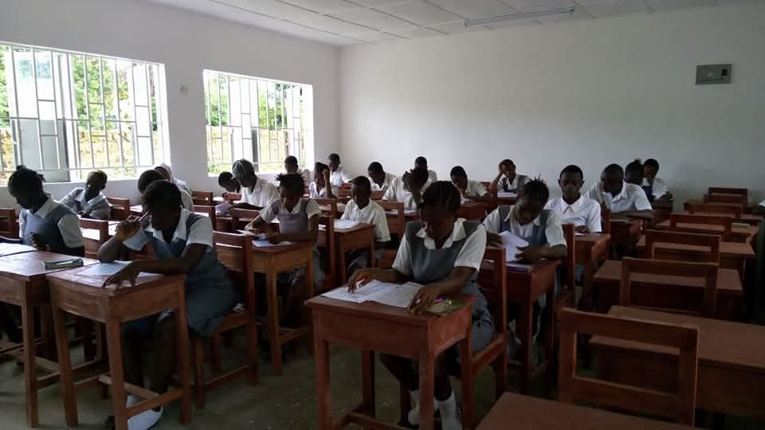
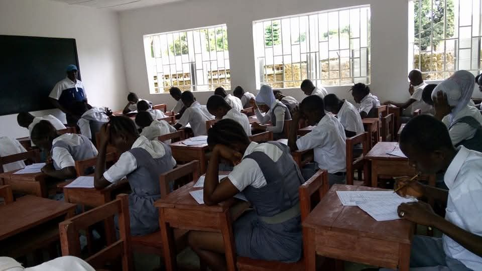
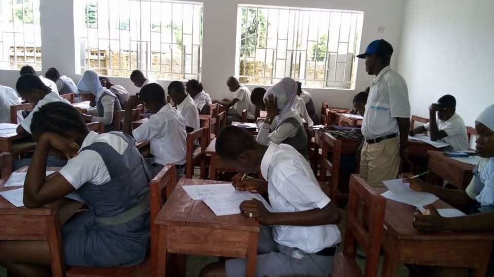

Examinations & Assessments
Benevolent Islamic Secondary School uses comprehensive examination and assessment procedures to evaluate student learning, progress, and achievement. Our assessment systems are designed to support student growth and identify areas for improvement.
Continuous Assessment
Measurement and evaluation are the key to continuous improvement in how we teach, and the results we act on must be of high integrity. Assessment covers the wide range of subjects prescribed by the Ministry of Basic and Senior Secondary Education.
Annual promotion is based on six formal trial tests, two in each of the three terms of the academic year.



Rule Number One: No Examination Malpractice
Over several decades the school has shown high academic standards, internally and externally, and it has no tolerance for examination malpractice by pupils or staff. Pupils and staff caught in examination malpractice are expelled from the school.
Public Examinations
- BECE (Basic Education Certificate Examination) at the end of JSS 3
- WASSCE (West African Senior School Certificate Examination) at the end of SSS 3
Assessment Policies
- All assessments are designed to measure learning outcomes
- Assessments are fair, valid, and reliable
- Students are informed of assessment criteria in advance
- Regular feedback is provided to support improvement
- Academic integrity and honesty are strictly enforced
Grading System
Student performance is reported using a standardized grading system that reflects achievement levels and provides clear feedback to parents and students.
Examination Conduct
Students are expected to:
- Arrive on time with proper identification
- Follow all examination rules and regulations
- Complete assessments independently
- Maintain academic honesty
- Maintain silence and respect other candidates
Support & Accommodations
Students with special needs or learning differences may be eligible for assessment accommodations. Please contact the school for information about available support.